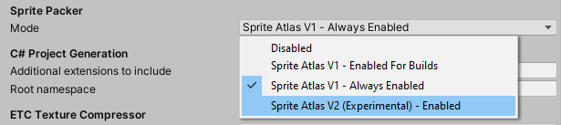
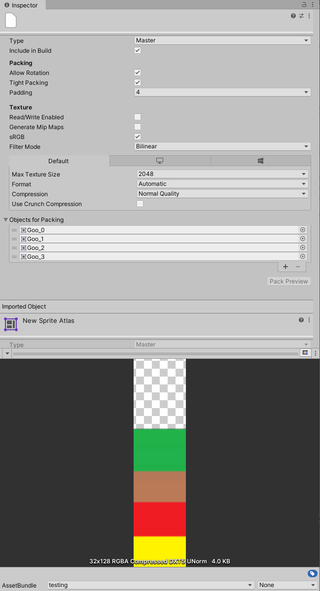

当前的 Sprite Atlas 将纹理（来自精灵、纹理内的精灵和文件夹中的精灵）打包为一个图集纹理。进入运行模式时，或者构建播放器或 AssetBundle 时，它会打包这些纹理。
要配置打包行为，请转到 Edit > Project Settings > Editor > Sprite Packer ** 并从 Mode** 下拉选单选择一个选项。

将 Sprite Packer Mode 设置为 Sprite Atlas V2 Experimental。
AssetDatabase V1 不能有依赖项，也不支持命名对象的导入器，所以 Unity 通过自定义机制打包其精灵图集，并将纹理的输出数据和渲染数据存储在 Library/AtlasCache 文件夹中。
但是，Sprite Atlas 版本 1 不支持缓存服务器 。Unity 只能缓存存储在 Library 文件夹中的 Artifact（通过导入过程生成的数据）。由于它不使用导入器，当前系统无法使用由 AssetDatabase V2 (ADBV2) 提供的功能，如缓存服务器支持等。
版本 2 实验性系统的开发遵循以下标准：
1.使用支持缓存服务器和其他 ADBV2 功能的导入器工作流。
2.Sprite Atlas 运行时对象没有变化。
3.确保存在将当前精灵图集迁移到 Sprite Atlas 版本 2 的路径。
4.UX 工作流程没有重大变化。
除了以下内容外，与 Sprite Atlas 版本 1 相比，Inspector 属性和设置没有变化：
1.在 Sprite Atlas 版本 2 中，您不能将文件夹直接拖到 Objects for Packing 来添加打包内容，但仍支持将精灵和纹理直接拖到窗口上。
2.导入的 Sprite Atlas 对象显示在 Inspector 的底部。

更新的 Inspector 属性。
要启用实验性 Sprite Atlas 版本 2 模式，请转到 Edit > Project Settings > Sprite Packer，打开 Mode 下拉选单并选择 Sprite Atlas V2 (Experimental) - Enabled。
当您启用实验性 Sprite Atlas 版本 2 时：
1.当您通过 Assets 菜单创建精灵图集时，它成为默认模式 (Assets > Create > Sprite Atlas)。
2.Unity 自动将所有现有的 Sprite Atlas 版本 1 资源迁移到 Sprite Atlas 版本 2。
由于自动迁移，您应该在启用 Sprite Atlas 版本 2 之前备份版本 1 的精灵图集。转换为版本 2 的资源与版本 1 不兼容，无法转换回来。
目前不支持通过脚本编辑 Sprite Atlas 版本 2。
*Sprite Atlas 版本 2（实验性）添加于 2020.1 NewIn20201